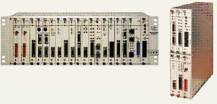
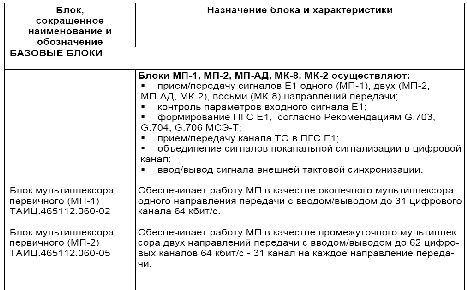
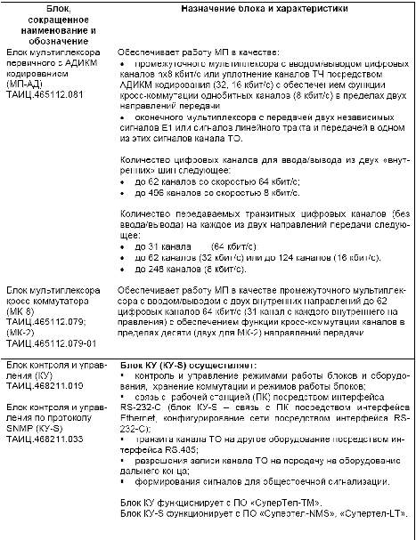
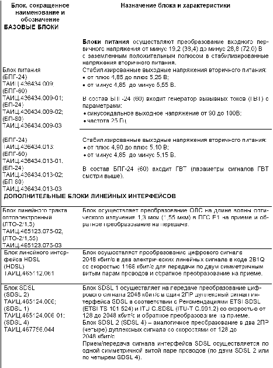
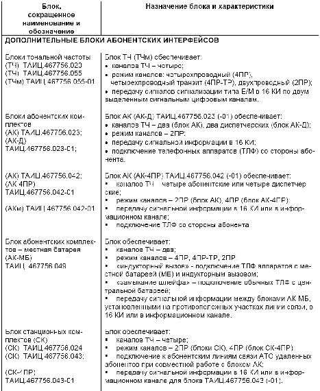
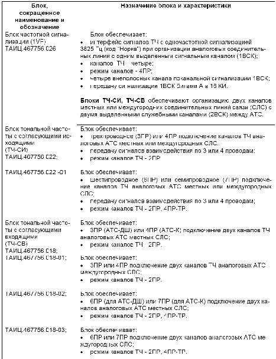
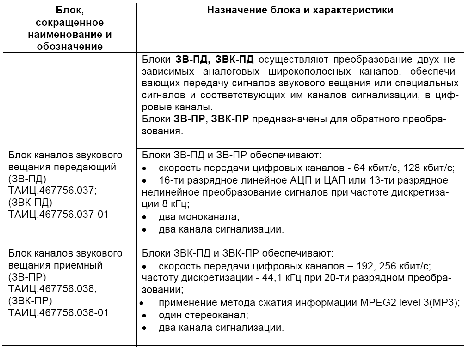
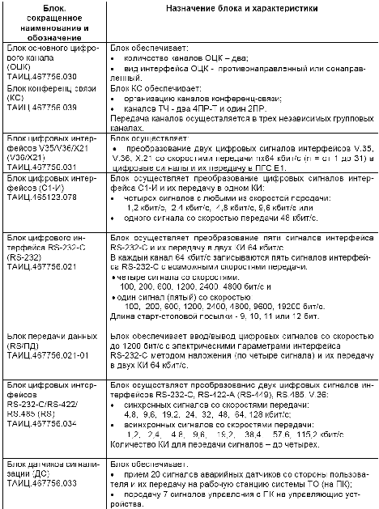
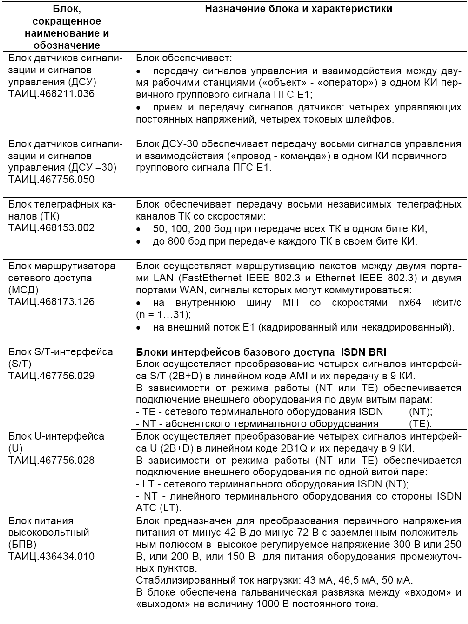

Тема №5. Устройство и эксплуатация цифровых систем телекоммуникаций
Занятие №8. Назначение, состав и применение первичных мультиплексоров.
Учебные вопросы:
Литература:
- Многоканальные системы передачи (часть 2). Учебно-методическое пособие «Аппаратура МКСП с ЧРК». – Мн.: БГУИР, 2010.
- Учебно-наглядное пособие «Альбом схем аппаратуры МКСП». – Мн.: БГУИР, 2010.
- Касанин С.Н., Дюжов Г.Ю. Субботин С.Г. Методическое руководство «Цифровая система передачи MEGATRANS-3M». – Мн., БГУИР, 2010.
1. Применение первичных мультиплексоров серии МП в сетях связи.
Рисунок 1. Программно-управляемые многофункциональные первичные мультиплексоры серии МП.
Программно-управляемые многофункциональные первичные мультиплексоры серии МП представляют собой многофункциональное каналообразующее оборудование со скоростью передачи сигнала 2048 кбит/с с возможностью гибкого конфигурирования и предназначены для применения в качестве оборудования абонентского доступа на сетях связи различного назначения (на городских, зоновых и магистральных линиях связи). Многофункциональность и гибкое конфигурирование мультиплексоров первичных обеспечивается компоновкой их самостоятельными изделиями - базовыми и дополнительными блоками.
1.1 МП обеспечивают:
- прием/передачу сигналов:
- первичного сетевого интерфейса в соответствии с Рекомендацией G.703 МСЭ-Т (сигналы Е1),
- линейного тракта:
- оптических линейных сигналов в коде CMI со скоростью передачи 2048 кбит/с (ОЛС),
- электрических линейных сигналов в коде 2B1Q со скоростью передачи 1168 кбит/с по каждой паре (сигналы HDSL),
- электрических линейных сигналов в соответствии с Рекомендациями ETSI SDSL (ETSI TS 101 524) и ITU G.SDSL (ITU-T G.991.2) со скоростями передачи от 128 до 2048 кбит/с (сигналы SDSL).
- возможность резервирования по типу 1+1:
- электрических входов/выходов сигналов Е1,
- сигналов линейного тракта при наличии в конфигурации МП резервных блоков линейного интерфейса,
- первичного питания при наличии в конфигурации МП резервного блока питания;
- формирование из сигналов абонентских интерфейсов (АИ) с различ-ными скоростями передачи (аналоговых, цифровых, сигналов интерфейсов базового доступа ISDN BRI) первичных групповых сигналов с цикловой структурой в соответствии с Рекомендациями G.703, G.704, G.706 МСЭ-Т, включая выполнение процедуры CRC-4 (сигналы ПГС Е1);
- ввод/вывод из ПГС Е1 цифровых каналов со скоростями передачи nx64 кбит/c, nх8 кбит/с с дальнейшим их преобразованием в сигналы АИ или уплотнение каналов посредством АДИКМ кодирования (32 кбит/с, 16 кбит/с);
- функцию кросс-коммутации каналов со скоростями 64 кбит/c в пределах до десяти направлений передачи или кросс-коммутацию однобитных каналов со скоростями 8 кбит/с в пределах двух направлений передачи;
- прием сигналов управления системы ТО и передачу информации о состоянии МП;
- вывод сигнала внешней тактовой синхронизации 2048 кГц для синхронизации другого оборудования.
1.2 В зависимости от назначения МП подразделяются на:
- оконечные мультиплексоры;
- промежуточные мультиплексоры;
- мультиплексоры кросс-коммутаторы
1.2.1. Оконечный мультиплексор одного направления передачи с вво-дом/выводом сигналов абонентских интерфейсов (АИ).
Оконечный МП осуществляет:
- прием/передачу двух сигналов Е1 при использовании двух электриче-ских входов/выходов сигналов Е1 (вх./вых. Е1):
- один вх./вых.Е1 используется для подключения рабочего оборудования (например оборудования электрического тракта или оборудования группообразования),
- другой вх./вых.Е1 – для подключения резервного оборудования;
- прием/передачу сигнала линейного тракта с возможностью резервирования:
- линейного тракта по типу 1+1 при наличии в конфигурации МП до двух блоков линейного интерфейса,
- линейного тракта при подключении оборудования к вх./вых. Е1;
- ввод/вывод до 31 цифрового канала (64 кбит/с).
1.2.2. Промежуточный мультиплексор двух направления передачи с вво-дом/выводом сигналов АИ.
Промежуточный МП для каждого из двух направлений передачи осуществляет:
- прием/передачу двух сигналов Е1 при использовании двух электриче-ских вх./вых. Е1 для подключения рабочего и резервного оборудования;
- прием/передачу сигнала линейного тракта с возможностью резервирования:
- линейного тракта по типу 1+1 при наличии в конфигурации МП до двух блоков линейного интерфейса,
- линейного тракта при подключении оборудования к вх./вых. Е1;
- ввод/вывод до 31 цифрового канала (64 кбит/с) или ввод/вывод цифровых каналов со скоростями nх8 кбит/с или уплотнение каналов ТЧ посредством АДИКМ кодирования (32 и 16 кбит/с);
- обеспечение функции кросс-коммутации однобитных цифровых кана-лов со скоростями 8 кбит/с в пределах двух направлений передачи.
1.2.3. Мультиплексор кросс-коммутатор десяти (двух) направлений передачи и вводом/выводом сигналов АИ.
Мультиплексор кросс-коммутатор осуществляет:
- прием/передачу сигналов Е1 восьми (двух) направлений передачи;
- прием/передачу сигналов линейного тракта;
- кросс-коммутацию цифровых каналов между десятью (двумя) направ-лениями передачи:
- сигналов 1Е1…8Е1 (1Е1…4Е1),
- сигналов линейных трактов при наличии в конфигурации МП блоков линейных интерфейсов;
- ввод/вывод до 62 цифровых каналов (64 кбит/c) с каждого внутреннего направления (внутренние направления - это два направления ввода/вывода сигналов АИ при наличии в конфигурации МП блоков АИ).
2. Состав оборудования первичных мультиплексоров.
Блоки из состава МП и их назначение
Блоки из состава МП подразделяются на:
- базовые:
- один из блоков мультиплексора первичного: МП-1, МП-2, МП-АД, МК-8, МК-2,
- один из блоков контроля и управления: КУ, КУ-S,
- один из блоков питания: БПГ-24, БПГ-60, БП-24, БП-60.
При использовании двух блоков питания один блок используется как основной, второй как резервный;
- дополнительные:
- блоки абонентских интерфейсов (АИ),
- блоки линейных интерфейсов (ЛИ),
- блок питания.
Назначение блоков приведено в таблице 1.1
Таблица 1.1
       3.НАЗНАЧЕНИЕ БЛОКА МП-2(МП-8).
3.1 Блок МП-2 предназначен для:
- прямого и обратного преобразования сигналов Е1 двух направлений передачи (HDB-3, G.703) в информационные сигналы в формате NRZ;
- выделения тактового сигнала приема каждого сигнала Е1;
- формирования управляющих и тактовых сигналов для блоков абонентских интерфейсов. Фазы управляющих сигналов синхронизированы с фазой информационного сигнала с помощью устройства синхронизации;
- формирования из цифровых каналов (64 кбит/c) двух первичных групповых сигналов со скоростью передачи 2048 кбит/c с цикловой структурой согласно Рекомендаций G.703, G.704, G.706 МСЭ-Т, включая выполнение процедуры CRC-4 (сигналы ПГС Е1);
- записи в нулевой КИ передаваемого информационного сигнала каждого направления передачи кодовых слов цикловой и сверхцикловой синхронизации, сигналов извещений, аварий и других служебных сигналов;
- объединения сигналов по канальной сигнализации в 16 КИ ПГС Е1;
- выделения сигнала ошибок для подсчета Кош.
Блок МП-2 обеспечивает ввод/вывод из двух ПГС Е1 до 60 (62) каналов 64 кбит/с:
- c транзитной передачей не выделяемых каналов - смотри рисунок 1.1;
- без транзитной передачи каналов - смотри рисунок 1.2.
В режиме резервирования блок для каждого направления передачи обрабатывает два одинаковых информационных сигнала в формате NRZ, при этом выбор сигнала, из которого осуществляется ввод/вывод цифровых каналов, происходит в автоматическом или ручном режиме:
- в режиме резервирования электрических вх./вых. Е1 – смотри рисунок 1.3;
- в режиме резервирования линейного тракта электрическим вх./вых. Е1 - смотри рисунок 1.4.
3.2 Блок МК-8 предназначен для:
- приема/передачи следующих сигналов:
- восьми сигналов первичного сетевого интерфейса в соответствии с Ре-комендацией G.703 МСЭ-Т (потоки Е1),
- двух сигналов линейного интерфейса при подключении линейных ОЛТ, хDSL-трактов;
- формирования первичных групповых сигналов с цикловой структурой согласно Рекомендаций G.703, G.704, G.706 МСЭ-Т, включая выполнение процедуры CRC-4 (ПГС Е1);
- контроль параметров входных сигналов Е1;
- обеспечения цикловой и сверхцикловой синхронизации сигналов Е1;
- объединения сигналов по канальной сигнализации в 16 канальный ин-тервал ПГС Е1;
- ввода/вывода канала технического обслуживания (ТО). Канал ТО передается в битах национального использования, скорость канала ТО - 2400 бит/с;
- выделение тактовой частоты, которая может использоваться для синхронизации всего оборудования;
- ввода/вывода сигнала внешней тактовой синхронизации.
1.2 Блок МК-8 осуществляет:
- кроссовую коммутацию цифровых каналов и канальных интервалов (КИ) между десятью направлениями передачи:
- направлениями 1…8 (направления потоков 1Е1…8Е1),
- направлениями ЛИ1, ЛИ2 (направления сигналов линейных интерфейсов при наличии в конфигурации МП блоков линейных интерфейсов);
- ввод/вывод с внутренних направлений А, В до 62 цифровых каналов - до 31 канала с каждого направления. Внутренние направления А и В - это направления ввода/вывода сигналов абонентских интерфейсов (АИ) при наличии в конфигурации МП блоков АИ.
1.3 Блок МК-8 обеспечивает:
- электрические входы/выходы сигналов Е1 для подключения оборудования рабочего и резервного трактов:
«1 вх./вых. Е1» …. «8 вх./вых. Е1»; - электрический вход/выход сигнала внешней тактовой синхронизации «Вх./вых. Внеш.синхр.».